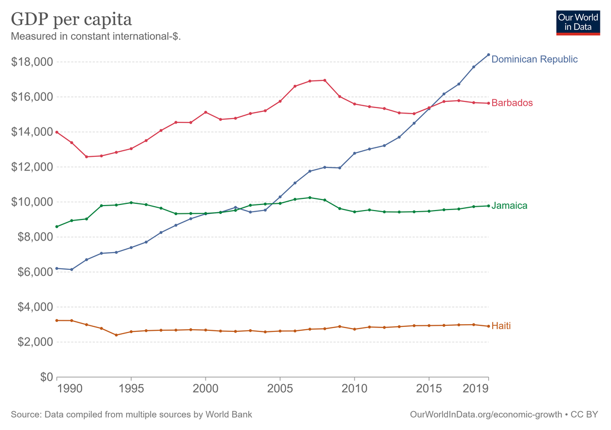

30 Jamaica
Smith
Jamaica is classified as a middle-income country by the World Bank. In terms of GDP per capita (PPP), it’s at about $10,000, putting it somewhere in the same neighborhood as Vietnam, Tunisia, or Jordan. That’s rich enough for Jamaicans not to starve, and for most to have generally decent living situations, but not enough to eliminate extreme poverty or create the kind of broad middle class we’d recognize as such in a developed country.

Jamaica’s socialist policies in the early 70s — nationalization of industry, import barriers, subsidies for basic goods, high deficits, and so on — did long-term damage, while Barbados’ relatively neoliberal policies avoided hurting its economy much during those troubled years.
This, if true, would be a pretty direct rebuke to the ideas of people like Ha-Joon Chang, who argue that nationalization, import barriers, and tolerance of rapid inflation are a more effective growth strategy than the traditional “neoliberal” orthodoxy of privatization, free trade, sound money, and balanced budgets. And interestingly, Jamaica’s more leftist turn in the 70s didn’t result in enduringly lower inequality than Barbados — the two countries’ Gini coefficients are almost equal, both in the mid-40s.
The more important question here has to be why Jamaica hasn’t seen a takeoff in growth, the way the Dominican Republic. has. Remember, a growth takeoff — rather than simply stagnation at a higher level — is the ultimately goal of “development state” policies like those recommended by Ha-Joon Chang.
It might be that each country just has to wait its turn in line, waiting for the so-called “flying geese” of global capital to decide that this is the next place to produce shoes and clothes and toys. Under this theory, countries can at best hope to cut in line by having slightly better education and infrastructure than the next country over.
But if we assume there is something countries can do to jump-start industrialization, then the best candidate for what they can do is the “development state”. My favorite formulation of this is in the book How Asia Works, which — though it doesn’t get everything quite right — is the simplest and most reasonable guide to the basic idea. The author, Joe Studwell, distills the experiences of successful East Asian industrializers into three basic steps:
Land reform, to employ the rural population and raise farm output while freeing up landlords to start manufacturing companies
“Export discipline”, meaning a country promotes exports in manufacturing industries as a tool to absorb foreign technologies, learn how to climb the value chain, and generate foreign exchange
Financial repression, meaning that the finance sector is forced to fund manufacturing and exports rather than putting all its money in stuff like real estate or Bitcoin or whatever.
On land reform, Jamaica fails badly; concentrated land ownership and widespread tenant farming is a big reason for its continued high inequality. The Jamaican Left keeps proposing land reform, and it keeps not getting done. This is probably depriving Jamaican manufacturing of talent; a number of the country’s richest and most well-educated people are engaged in relatively unproductive landlording instead of starting the next Hyundai or Samsung.
How about export discipline? Here, Jamaica faces a more formidable enemy than political gridlock — its own abundance of natural resources. Jamaica has huge reserves of bauxite, which is used to make aluminum. This accounts for an enormous percentage of its exports.
Exporting aluminum-related minerals makes Jamaica’s currency more expensive (since it means other countries have to buy a lot of Jamaican dollars in order to buy the minerals). That makes Jamaican exports less competitive. This is known as “Dutch disease”.
The second problem posed by resource abundance is high wages. Yes, we all think high wages are good, but if you’re trying to get in on the cutthroat game of global manufacturing exports, you need to start at the bottom, with simple low-value activities like making clothes and toys and light electronics assembly. This is how Bangladesh and Vietnam — and, indeed, the Dominican Republic — kicked off their own exponential growth. But with a per capita GDP of around $10,000 in 1990, Jamaica was much richer than Vietnam or Bangladesh or the D.R. In fact, it’s still richer than the first two.
Because it had so much bauxite (and, possibly, so much tourism), Jamaican wages were necessarily uncompetitive when they needed to be competitive.
In fact, Jamaica did make a big push for export-oriented industrialization, starting with exactly the kinds of labor-intensive light manufacturing industries that have worked well for the successful industrializers. Established in the 1970s and 1980s, the Jamaican Free Zones were similar to China’s Special Economic Zones — they provided tax exemptions for businesses, facilitated foreign investment, and favored export-oriented industries like textiles.
But the Free Zones never took off. Even with all the tax breaks, Jamaican manufacturing was just never competitive. In an economy that’s used to middle-income living standards, the low wages and brutal conditions necessary to be competitive in labor-intensive manufacturing just didn’t provide people with what they considered to be decent work.
Whereas Bangladeshi and Vietnamese workers would endure harsh conditions for a while but eventually get better lives as companies learned how to do more complex manufacturing, Jamaica’s high starting wages short-circuited that process. If industrialization is a process of learning to walk before you learn to run, then according to this theory, Jamaica was born with a fancy aluminum wheelchair.
This might be the brutal, unfortunate truth for developing countries — those that are endowed with plentiful natural resources might simply be destined to start out ahead but eventually fall behind.
The fact is, we don’t really know how economic development happens, and to put too much faith in the Chang/Studwell story would be unwise. After all, the Dominican Republic is pulling off a successful manufacturing-based industrialization, and yet its top export is still gold. So having resource endowments doesn’t ensure stagnation; Jamaica still has a chance.
With the rise of highly complex service industries, there’s always the chance that Jamaica may in some sense be able to “leapfrog” to higher-value activities. Jamaica is trying to do this with the Jamaica Logistics Hub, which envisions the island becoming a waystation for trade throughout the Caribbean and Latin America. This can be a good strategy for a small country — is has worked well for countries like Dubai and Singapore, each of which is actually more populous than Jamaica.
Becoming a logistics hub will involve a lot of new infrastructure — in fact, China is helping Jamaica build out its facilities. Ports, roads, and various processing facilities are all being built. According to some sources, the country is now investing about a quarter of its GDP, almost as good as Vietnam, up from about a fifth of GDP five years ago.
Jamaica has avoided becoming a kleptocratic basket case like many resource exporters. Jamaica is doing OK, but it deserves to be a rich country. It just has to keep experimenting until it finds a model that will get it there.
Smith (2021) Jamaica is doing OK Could it do better than OK?